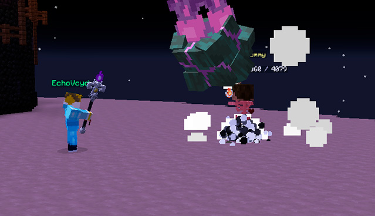

Vælg din første class!

Når du skal til at vælge din class, kan det være svært at finde ud af, hvilken der skal vælges. Generelt er det godt at vælge den, man selv umiddelbart synes er sjovest. På den anden side kunne det være rart at vide lidt mere om, hvad de forskellige classes og archetypes gør før man tager beslutningen.
Class typer
Der stor forskel på spillestilen mellem de fem muligheder af classes. Assassin og Archer er de to store damage dealers, Warrior er tanken i spillet og kan tage meste skade, og til sidst er der Mage og Shaman som er mere support-classes.
Selvom disse classes har en generel rolle, gør archetypes også en forskel. For eksempel kan man godt få en Warrior til at gøre mere skade, men det ville være på bekostning af dens evner til at tage skade.
Archetypes og gearet, man bruger definerer, det de forskellige classes bruges til. Archetypes kan læses mere om her.
Warrior
I løbet af ens første class er det rart ikke at dø hele tiden, derfor anbefales det at man vælger Warrior, som har noget at stå imod med. Derfor ikke sagt, at de andre classes ikke også kan klare det, men Warrior er et stærkt første valg fordi den kan gøre skade og samtidig være i stand til at tage mest skade.
Archer
Archer er også et godt valg at starte med. De er ikke lige så modtagelige over for skade som Warrior er, men de har mere længde på deres angreb, så man heller ikke kommer for tæt på mobs. Som bemærkning, at deres spells er omvendt i forhold til alle andre klasser, det vil sige, at de starter på venstre klik, hvor de andre starter på højre.
Assassin
Assassin er god til skade, men har også nemt ved at blive ramt, da den ikke har meget liv. På den anden side kan Assassin gøre sig usynlig, så mobs ikke kan se en. Men at være usynlig stopper også en for at regenerere liv og mana.
Mage og shaman
Mage og Shaman kan begge heale, men Shaman får først healing sent i spillet. Shaman er også virkelig følsom for skade, derfor er Shaman ikke et super valg før man kender lidt mere til spillet. Mage får healing stort set fra starten af og har nemt ved at komme hurtigt rundt, men gør ikke meget skade.
Håber, at denne lille sammenligning af klasserne kan hjælpe lidt med at vælge din første klasse. Det vigtigste er egentlig at vælge den, man selv synes er sjovest, og så vil man nok lære resten hen ad vejen.